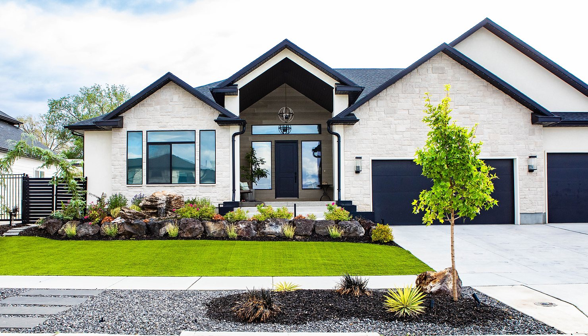

How Can I Make My Landscaping More Pet-Friendly?

You can make your landscaping more pet-friendly by selecting non-toxic plants, establishing designated play areas, securing the perimeter, and avoiding harmful chemicals and sharp objects.
Creating a pet-friendly landscape is more than just ensuring your yard looks beautiful. It's about crafting a space where your furry friends can safely play, explore, and relax. At Ironhills Landscaping, we understand that your pets are a part of your family, and we’re here to help you design a yard that meets everyone's needs.
Key Takeaways:
Choose non-toxic plants and avoid harmful ones.
Designate specific areas for pet play.
Install and maintain secure fencing.
Provide shade and shelter.
Regularly clean up pet waste.
Use pet-friendly materials.
Ensure access to water.
Create defined borders.
Understanding Pet-Safe Plants
When planning your landscaping, selecting the right plants is crucial. Some plants are safe for pets, while others can be toxic.
Non-Toxic Plant Choices
Opt for plants like lavender, rosemary, pet grass, and succulents. These plants not only add beauty to your garden but are also safe for your pets to be around.
Toxic Plants to Avoid
Avoid planting lilies, azaleas, and oleanders, as these can be harmful or even fatal if ingested by pets. Research any new plants before adding them to your garden to ensure they are pet-safe.
Designated Play Areas
Creating specific zones for your pets to play and exercise is essential. This ensures they have a dedicated space to burn off energy without damaging other parts of your garden.
Benefits of Specific Pet Play Zones
Having a designated area for your pets helps keep your garden organized and your plants safe. It also provides a clear boundary for where your pets can roam freely.
Enhancing Play Areas with Safe Materials
Consider using artificial turf, pet-friendly mulch, and safe fencing materials. These not only enhance the safety of the area but also make it more comfortable and enjoyable for your pets.
Installing Secure Fencing
A secure fence is vital to keep your pets safe within your yard. It prevents them from wandering off and protects them from external dangers.
Importance of Secure Fencing
Secure fencing ensures that your pets remain within the safety of your yard. It provides peace of mind, knowing they are protected from traffic and other hazards.
Tips for Maintaining Fencing
Regularly check your fencing for any signs of wear and tear. Look for evidence of digging, cracks, or holes that might allow your pets to escape. Ensure your fencing is sturdy and reliable.
Providing Shade and Shelter
Pets need protection from the elements, just like humans. Providing adequate shade and shelter in your yard is essential for their well-being.
Need for Shaded Areas
Pets can easily overheat in direct sunlight. Ensure there are plenty of shaded spots in your yard where they can cool off.
Natural and Artificial Shade Solutions
Incorporate trees, shrubs, and pergolas to provide natural shade. You can also use canopies or pet houses as additional shelter options.
Maintaining Regular Clean-Up
Keeping your yard clean is crucial for the health and hygiene of your pets and family. Regular clean-up routines help maintain a pleasant and safe environment.
Hygiene and Health Benefits
A clean yard reduces the risk of diseases and parasites. It also keeps your outdoor space more enjoyable for everyone.
Effective Clean-Up Strategies
Establish a routine clean-up schedule. Use pet waste disposal bags and bins to keep your yard tidy. Regularly inspect and clean your pets’ play areas.
Incorporating Pet-Friendly Materials
The materials you choose for your landscaping can significantly impact your pets' comfort and safety.
Safe Ground Cover Options
Use materials like flagstone, brick, or concrete that are comfortable for your pets’ feet and do not retain excessive heat.
Materials to Avoid
Avoid using cocoa mulch, as it contains theobromine, which is toxic to pets. Opt for safer alternatives like cedar or pine mulch.
Ensuring Access to Water
Just like humans, pets need access to fresh water, especially when playing outdoors.
Importance of Water Availability
Having adequate water sources in your yard ensures your pets stay hydrated and cool.
Safe Water Features for Pets
Incorporate fountains, streams, or shallow ponds that are safe and accessible for your pets. Ensure any water feature is easy to clean and maintain.
Creating Defined Borders
Establishing clear boundaries within your yard helps keep your pets safe and prevents them from damaging delicate plants.
Benefits of Clear Boundaries
Defined borders help control where your pets roam, keeping them away from areas where they might cause damage or get into trouble.
Methods for Defining Pet Areas
Use decorative fencing, edging, or natural barriers like hedges to delineate pet areas. This creates a visually appealing and functional landscape.
Pet-Friendly Landscaping Tips
Combining these tips can help you create a harmonious and safe outdoor environment for your pets.
Additional Pet Safety Tips
Beyond landscaping, consider other safety measures like avoiding harmful chemicals, using pet-safe fertilizers, and supervising your pets while they are outside.
Ironhills Landscaping's Pet-Friendly Services
At Ironhills Landscaping, we specialize in creating beautiful, pet-friendly landscapes. Our team is dedicated to understanding your needs and providing solutions that ensure a safe and enjoyable outdoor space for your pets.
FAQs
What are the best pet-safe plants for my garden?
Opt for non-toxic plants like lavender, rosemary, pet grass, and succulents.
How can I make my fence more secure for my pets?
Regularly check for and repair any cracks, holes, or signs of digging.
What materials should I avoid in my pet-friendly yard?
Avoid cocoa mulch, which contains theobromine, a toxic substance for pets.
How can I provide shade for my pets?
Use natural options like trees and shrubs, or install pergolas and canopies.
Why is regular clean-up important in a pet-friendly yard?
It maintains hygiene, reduces disease risk, and keeps the yard pleasant for all.
Transform Your Yard with Ironhills Landscaping: Create a Pet-Friendly Paradise Today!
Creating a pet-friendly landscape is all about balance. By incorporating these tips, you can ensure your yard is a safe, beautiful, and enjoyable space for both you and your pets. At Ironhills Landscaping, we are dedicated to helping you achieve this balance, bringing your outdoor dreams to life while keeping your pets’ needs in mind.
Contact us at Ironhills Landscaping today to get started. Our expert team is here to help you create a safe and beautiful outdoor space that both you and your pets will love. Let’s work together to make your vision a reality!
Recent Posts


If you live in Lehi, there's a good chance your yard isn't perfectly flat. Newer neighborhoods near Traverse Mountain, homes along the foothills, and lots that step down toward the street all share th